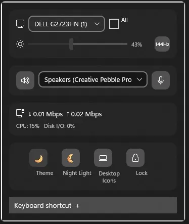
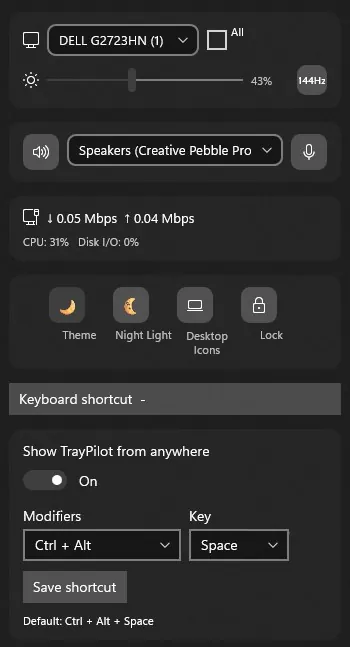

Windowsアプリ · 公開中
TrayPilot
Windows 11向けのコンパクトなパネルで、日常的な操作をすぐ手元に。対応モニターの明るさ調整、再生デバイスの切り替え、ネットワーク速度のリアルタイム表示、よく使う設定の変更ができます。パネルを開くショートカットはご自身で選べます。
対象ユーザー: 画面、音声、ネットワークの操作をワンクリックで行いたいWindows 11ユーザー向けです。
できること
- 対応モニターの明るさを調整できます（ノートPCの画面にも対応）
- 再生デバイスの切り替えや、スピーカー・マイクのミュートをワンクリックで
- 有効なネットワークアダプターのダウンロード速度とアップロード速度を確認
- テーマ、夜間モード、電源モード、デスクトップアイコン、画面ロックへのショートカット
- パネルを開くキーボードショートカットを自由に設定できます
できないこと
- サインイン、クラウド同期、利用状況の追跡を必要とすること
- マイクを使用したり、画面を取得したりすること
- 常時動作するバックグラウンドサービスを実行すること
スクリーンショット

